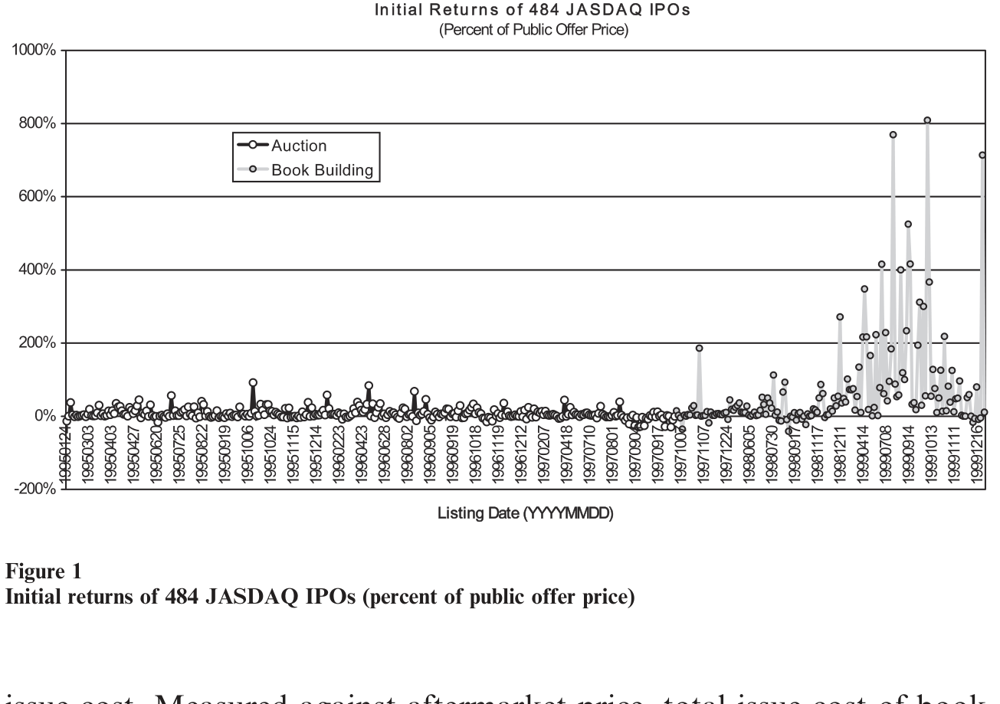
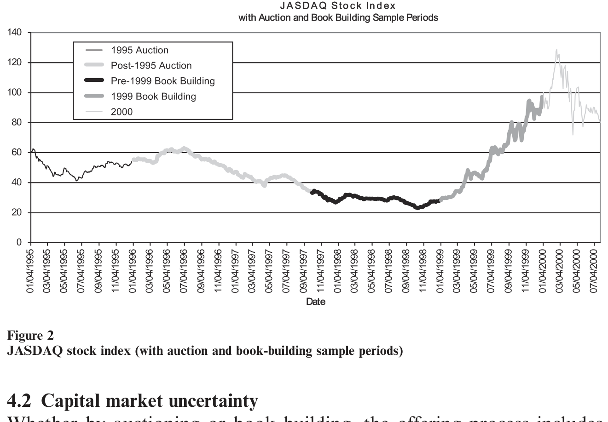
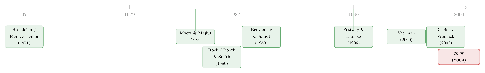

「贵」的方法，为什么把「便宜」的方法赶尽杀绝？——日本新股发行的一场自然实验
本文读的是 Kutsuna & Smith (2004, Review of Financial Studies)：1997 年日本把「簿记建档 (book building)」作为强制拍卖法之外的一个可选项放进市场，结果一个月之内，所有发行人都倒向了簿记建档——尽管对多数发行人来说，它的总发行成本更高，承销费对所有人都更高。作者的核心洞见是：簿记建档带来的好处有一部分是再分配性的（被拍卖低估的公司赚了，被拍卖高估的公司亏了），于是即便集体上大家更偏好拍卖，每一个发行人都会单独选择簿记建档。一句话——一个不带任何总量收益的方法，照样可以把对手逐出市场。
1 一个让人别扭的「市场投票」
先讲一个事实，一个乍看之下毫无悬念、细想却越想越别扭的事实。
在美国、日本以及世界上大多数国家，新股 (IPO) 的定价方式，是一种以簿记建档为核心的协商方法：承销商先去机构投资者那里「探价」，再据此定下发行价。Sherman (2002) 翻遍了 44 个国家，得出一个几乎没有例外的结论——只要监管不禁止簿记建档，就没有任何一个国家的发行人会持续地、自愿地去用拍卖法发新股。
如果你信奉「市场会用脚投票」，故事到这里就该结束了：大家都选簿记建档，那一定是因为它更好、更便宜、对发行人更有利。可问题恰恰出在这里。
簿记建档真的更便宜吗？如果对每一家公司，簿记建档的总发行成本（承销费 + 抑价损失）都更低，而且它还能更准确地给公司估值，那它确实完胜拍卖，这没什么好讨论的。但万一不是呢？万一对相当一部分公司来说，簿记建档其实更贵呢？这时候「大家都选它」就不再是一句废话，而成了一道需要解释的题：为什么一群理性的发行人，会集体选择一个对多数人更贵的发行方式？
这正是 Kutsuna 和 Smith 这篇 2004 年发在 RFS 上的论文要回答的问题。而他们手上，恰好握着一把别人没有的钥匙——日本。
2 一场设计好的自然实验
研究新股发行方式的难处在于：你几乎永远只能观察到「均衡」。一个国家要么用簿记建档，要么用拍卖，你看不到「同一批公司在另一种制度下会怎样」。横截面比较受制于公司异质性，跨国比较受制于制度差异，都不干净。
日本提供了第三种、也是最有说服力的一种证据——市场实验 (market experiment)：在同一个国家里，制度本身变了。
这要从日本 IPO 制度的三段演化说起：
- 1989 年 4 月以前的固定价格 (fixed price) 时代：承销商按日本证券业协会 (JASD) 和交易所规定的一个数学公式，拿几家「可比公司」的相对盈利、股利、净资产算出发行价。公式管不住系统性抑价——Pettway 和 Kaneko (1996) 记录到这一时期东京交易所 110 家 IPO 的平均首日回报高达 62.1%。承销佣金约 3.5%。
- 1989 年的拍卖时代：一桩与抑价有关的政治丑闻（Recruit 事件，连首相都被迫辞职）之后，日本废掉固定价格，改用一种混合拍卖 (hybrid auction)。规则相当严苛：发行总量的 50%（「拍卖部分」）必须公开歧视性拍卖，若认购不足总股数的 25% 则拍卖失败；最低可接受报价是公式价值的 85%；更关键的是，禁止内部人参与，并把单个投资者的最高申购量限制在 5,000 股（按样本平均发行价约合 1000 万日元、约 10 万美元）。这套规则的用意昭然若揭——人为制造一个「大家都对称地无知」的环境，让没人有动力、也没人有能力去生产关于公司价值的信息。
- 1997 年底的簿记建档时代：日本把簿记建档作为拍卖法之外的一个可选项放进市场。拍卖法并没有被取消，发行人仍然可以选它。
于是反转出现了：在簿记建档可选之后一个月之内，所有发行人都改用了簿记建档。拍卖法明明还在货架上，却再没有一个人去碰它。

Figure 1: illustrates that, although book building was introduced in late
而且作者特别核对了一件事——这种切换并不是被市场行情裹挟的假象。研究区间里 JASDAQ 指数虽有起伏，但发行方式的更替几乎是「断崖式」的瞬间完成，与指数走势对不上节奏（见图 2）。这就排除了「只是因为牛市来了大家才换方法」的解释。

Figure 2: shows the JASDAQ index over the study interval. During the
接着，一个自然的问题是：换得这么齐、这么快，是不是因为簿记建档对每个人都省钱？作者把账一算，发现恰恰相反。
3 账先算清楚：簿记建档其实更贵
这是全文最反直觉、也最重要的一组事实。
作者比较了 1995–1999 年样本里两种制度下的发行成本（承销费加抑价，都折成占上市后市值的百分比）。结果呈现出一个清晰的规模效应 (scale effect)：
- 对大公司、大发行，簿记建档更便宜；
- 对小公司、年轻公司、小发行，拍卖更便宜。
如果按「一家公司算一票」做简单平均，多数公司在「没有簿记建档」的世界里反而成本更低——拍卖相对簿记建档的简单平均成本优势是上市后市值的 5.58%。换句话说，单看可观测的发行成本，对样本里的大多数公司而言，簿记建档是个更贵的选择，而且承销费对所有发行人都更高。
这意味着，「省成本」根本无法解释为什么所有人都倒向簿记建档。如果真是为了省钱，多数小公司理应留在拍卖。可它们没有。
但故事还有另一面。虽然簿记建档对小发行更贵，对大发行却便宜，而大发行的「体量」很大——所以一旦按发行规模加权，两种制度的总成本几乎相等。这是一个微妙而关键的结论：从一个国家的整体来看，在日本这样的发行人结构下，簿记建档相对那套混合拍卖法，几乎没有总量上的成本劣势，同时还附带了「定价更准」的好处。
于是真正的问题浮出水面——既然平均而言更贵，为什么每个人还都选它？答案不在「成本」这本账上，而在「谁亏谁赚」这本账上。
4 真正关键的一步：再分配，而非总量
这篇文章的灵魂，是把「为什么大家都选」和「这个选择对社会好不好」彻底剥开。
作者的论证框架，建立在一对古老的张力之上：
一边是「投资不足 (underinvestment)」。 Myers 和 Majluf (1984) 早就说清楚：当管理者掌握私有信息、又替被动投资者着想时，逆向选择会发生——高质量公司不愿在被低估时发行，投资者于是从「一家公司宣布要发股」本身推断它质量不高，进而压低估值。歧视性拍卖几乎完美贴合 Myers–Majluf 的假设：它没有任何低成本的机制让发行人把「我其实是好公司」这件事可信地传递出去。结果是好公司退场、放弃好项目，社会层面表现为投资不足。
另一边是「信息生产过度 (overproduction of information)」。 Hirshleifer (1971) 证明，一群偏好相同的人，作为整体并不能从「只服务于交换、而非生产」的信息中获益；追逐私利会导致信息的过度生产。Fama 和 Laffer (1971) 在资本市场的语境里得到类似结论：为交易而生产信息，无论竞争还是垄断，都可能过度。日本拍卖法那套「禁内部人、限申购量」的规则，本质上就是在压制这种为再分配而做的信息生产。
现在把簿记建档放进这对张力里看。簿记建档的本质区别——作者反复强调——不在于招股书里写了什么（拍卖和簿记建档的招股书信息可以一模一样），而在于承销商在定价中的中心地位：在簿记建档下，承销商对价值做出了一个可信的陈述 (credible representation of value)；在纯拍卖下，没有任何人做这种陈述。
这一下子既解决了投资不足（承销商替好公司「作证」，好公司敢发了），又打开了信息过度生产的口子：
簿记建档让发行人和承销商有机会生产信息，以牺牲其他发行人为代价为自己谋取再分配的好处。被拍卖低估的公司，在簿记建档下能拿到更高的价、卖出去更多的股；而这部分「多卖到的钱」，部分来自被拍卖高估、如今被簿记建档「校正」回去的那些公司。
于是关键的经济学就清楚了。簿记建档带来的收益里，有一块是再分配性的：它把蛋糕从一群人手里挪到另一群人手里，而不是把蛋糕做大。每一个发行人在私下盘算时，都会发现「我去用簿记建档，至少不会在别人都用、只有我用拍卖时被市场默认成那个『不敢被准确定价』的差公司」——这是一个典型的囚徒困境结构：哪怕集体上所有人都更偏好拍卖的世界，个体最优却是人人选簿记建档。一个不带任何总量收益的方法，就这样把对手逐出了市场。这也是标题那句话的全部含义：簿记建档可以 drive out 拍卖，即便它对总体毫无净好处。
正因如此，作者非常审慎地提醒：你不能用「市场投票」来下结论说「允许簿记建档的制度，一定优于不允许的制度」。因为一部分好处是相对的、再分配的，而禁掉簿记建档又可能带回投资不足。真正该问的反事实是两个方向的：在允许簿记建档的制度里发行的公司，若放到不允许的制度里会如何？反过来又如何？
（关于「为什么偏偏是更贵的承销方式赢了」这个问题，本博客另有一篇从「分析师吹捧」角度切入的姊妹篇，可参见《为什么「贵」的承销方式反而赢了？——新股发行里的一笔「分析师彩虹屁」暗账》；而把抑价理解为对「将来不好脱手」的补偿，则见《打折卖新股，是为了补偿你「将来不好脱手」的那份担心》。）
5 那些「没发成」的小公司
这篇文章还有一个容易被忽略、却在政策上极重要的角落：非发行 (nonissuance)。
作者的证据显示，在拍卖制度下，有相当一部分小公司选择了不发行。这件事在成本账上是「看不见」的——你只能比较那些发成了的 IPO 的成本，没法测量「因为发不起而没发」的公司的损失。可这些公司很可能因此放弃了有吸引力的投资。
这就给「拍卖对小公司更便宜」这个结论打上了一个大问号：拍卖名义上便宜，却可能把一批小公司直接挡在了门外。作者干脆做了一个极端假设来逼问下界——即便拍卖没有造成任何一家公司放弃发行，按规模加权后，日本样本的总发行成本由簿记建档来做也并不更高。也就是说，作者得到的成本比较，本身就是一个偏向拍卖的下界：它既没算进拍卖制度下「没发成」的机会损失，也没算进簿记建档「定价更准」的好处。把这两块加回去，簿记建档的相对优势只会更大。
这也是为什么作者说，一个方法对一个国家的净优势，高度取决于这个市场里准备上市的公司的结构：小公司多、年轻公司多的市场，拍卖的「门槛效应」伤害更大；大公司主导的市场，簿记建档的规模优势更明显。
6 文献脉络
这篇论文坐落在两条河流的交汇处。
一条河是信息的社会价值。源头是 Hirshleifer (1971) 和 Fama & Laffer (1971)：信息可以是生产性的，也可以只是为了在交易中再分配财富；后者会被私利推到过度。Myers & Majluf (1984) 从另一侧给出投资不足的经典刻画。这两端——信息过度与投资不足——正是本文搭建的那对张力。
另一条河是 IPO 的定价与发行机制。Rock (1986) 用「赢家诅咒」解释新股抑价；Booth & Smith (1986) 提出承销商「认证 (certification)」假说；Benveniste & Spindt (1989) 给出簿记建档的核心逻辑——承销商通过分配被低估的股份，诱导机构投资者吐露私有信息。进入 2000 年代，Sherman (2000, 2002) 系统论证簿记建档相对拍卖的信息优势与全球趋势；Biais & Faugeron-Crouzet (2002) 比较各种拍卖设计；Derrien & Womack (2003) 在 RFS 上用法国数据说明拍卖在热市场里更能控制抑价。

而在日本这条支线上，Pettway & Kaneko (1996) 记录了固定价格与拍卖切换前后的短期回报，Kerins, Kutsuna & Smith (2003) 则用公开的拍卖需求信息几乎完全解释了混合拍卖法中公开发行部分的价格调整。Kutsuna & Smith (2004)——也就是本文——把这两条河汇到一起：它不是又一篇「抑价之谜」的实证，而是借日本 1997 年这场制度实验，去回答一个机制选择与政策层面的问题。正如作者自己点出的，对政策的关切，是这篇文章区别于绝大多数「发行方式选择」研究的地方。
7 评论与延伸（Q&A + 研究方向）
(a) 几个可能的疑问
Q：「所有人都选簿记建档」难道不就证明它更好吗？为什么不能用市场投票下结论？
因为部分收益是再分配而非创造。被拍卖低估的公司用簿记建档赚到的钱，部分来自被拍卖高估、如今被「校正」的公司。个体最优（人人选簿记建档）与集体最优（也许大家更偏好拍卖世界）可以分离——这是囚徒困境，不是效率证明。
Q：簿记建档和拍卖最本质的区别，是不是「信息披露多少」？
不是。作者明确说，两种方法的招股书可以写得一模一样。本质区别是承销商在定价中的中心地位：簿记建档下承销商对价值做了一个可信陈述，纯拍卖下没有任何人做。日本的拍卖还刻意禁内部人、限申购量，就是要让大家「对称地无知」。
Q：既然簿记建档对多数小公司更贵，为什么不至少有几家小公司留在拍卖？
作者给了两个理由。其一，那些本会用拍卖发行的公司，可能干脆选择不发（它们原本只是在拍卖里搭便车，作者不把这种非发行算作簿记建档的成本）；其二，簿记建档并不总是更贵——对大发行它更便宜。两者叠加，货架上的拍卖法就空置了。
Q：5.58% 这个「拍卖成本优势」可信吗？是不是低估了簿记建档？
这是一个简单平均（一家一票）下的数字，且作者强调它是偏向拍卖的下界：它没算进拍卖制度下小公司「没发成」的机会损失，也没算进簿记建档定价更准的收益。一旦按发行规模加权，两种制度的总成本就几乎相等了。
Q：抑价被算进「发行成本」，这一步稳健吗？
这是作者诚实交代的一个偏向。如果簿记建档的抑价部分是对知情投资者「吐露信息」的租金（财富转移），把它整块算成耗散成本就高估了簿记建档的成本——也就是说，这个处理同样偏向拍卖。作者选择用结果解读来消化这一点。
Q：这套「再分配驱逐」的逻辑，能不能搬到公司债发行上？
部分可以。公司债同样存在「协商 vs 竞标」的选择（Smith 1987 关于 Rule 50 的研究就在此列），承销商的认证与信息生产同样关键。但债券现金流的上界封顶、违约风险主导，使「准确定价的再分配」效应与股权不完全相同——这恰是一个值得做的延伸。
(b) 几个可能的研究问题与提案
1. 把「再分配 vs 创造」的框架搬到公司债的承销方式选择上。 【经济故事】债券发行也有协商簿记与竞标之分，承销商的信息生产同样可能是再分配性的（一只债卖贵了，可能压低了同期同评级其它债的需求）。若簿记式承销在债市也「驱逐」竞标，是否同样源于再分配而非总量收益？【可行性】中。美国可用 Mergent FISD + TRACE 识别发行方式与一级市场定价，难点在于债券「竞标发行」样本稀少，识别需借助特定时期或特定品种（如市政债）的制度差异。
2. 谁被发行方式「挡在门外」？把非发行的机会成本量出来。 【经济故事】本文最大的「看不见的成本」是拍卖制度下小公司的非发行。若能找到一个发行方式切换的外生时点，观察哪些本可上市却没上的公司随后在融资、投资、雇佣上的轨迹，就能把这块缺口估出来。【可行性】中偏低。需要「准备上市却未上市」的可观测样本（如已递交辅导/已被风投投资的私人公司面板），识别上可用制度切换做事件研究，但反事实公司难以干净界定。
3. 外资机构进入与簿记建档信息生产的互补性。 【经济故事】簿记建档的价值来自机构投资者的信息吐露。日本拍卖时代机构几乎不参与（Tamura 1997 报告拍卖部分机构仅购入约 11.7%、公开发行部分约 13.7%），而簿记建档下机构占比升到约 15.4%。外资机构的进入是否系统性地放大了簿记建档的信息优势、从而加速了拍卖的退场？【可行性】高。可用日本各 IPO 的机构/外资配售明细 + 上市后定价准确度做横截面与时序分析，外资准入的渐进放开可提供识别变异。
4. 「定价更准」是否真的减少了上市后的流动性折价？ 【经济故事】作者推测簿记建档的更准定价会降低上市后数月的信息成本，从而抬高上市后价值，但这一块未直接检验。若簿记建档确实让上市后买卖价差更窄、流动性更好，就为「再分配之外的真实收益」提供了直接证据。【可行性】高。日本 JASDAQ 上市后日内/日度数据可估流动性指标，按发行方式与发行规模分组比较即可，识别上仍需控制公司规模与行情。
参考文献
- Benveniste, L. M., and P. A. Spindt (1989). How Investment Bankers Determine the Offer Price and Allocation of New Issues. Journal of Financial Economics 24, 343–361.
- Biais, B., and A. M. Faugeron-Crouzet (2002). IPO Auctions: English, Dutch, … French and Internet. Journal of Financial Intermediation 11, 9–36.
- Booth, J. R., and R. L. Smith (1986). Capital Raising, Underwriting and the Certification Hypothesis. Journal of Financial Economics 15, 261–280.
- Derrien, F., and K. L. Womack (2003). Auctions vs. Bookbuilding and the Control of Underpricing in Hot IPO Markets. Review of Financial Studies 16, 31–61.
- Fama, E. F., and A. B. Laffer (1971). Information and Capital Markets. Journal of Business 44, 289–298.
- Hirshleifer, J. (1971). The Private and Social Value of Information and the Reward to Inventive Activity. American Economic Review 61, 561–574.
- Kerins, F., K. Kutsuna, and R. Smith (2003). Why are IPOs Underpriced? Evidence from Japan's Hybrid Auction-Method Offerings. Working paper, Claremont Graduate University.
- Myers, S. C., and N. S. Majluf (1984). Corporate Finance and Investment Decisions When Firms Have Information that Investors Do Not Have. Journal of Financial Economics 13, 187–221.
- Pettway, R. H., and T. Kaneko (1996). The Effects of Removing Price Limits and Introducing Auctions upon Short-Term IPO Returns: The Case of Japanese IPOs. Pacific-Basin Finance Journal 4, 241–258.
- Rock, K. (1986). Why New Issues are Underpriced. Journal of Financial Economics 15, 187–212.
- Sherman, A. (2000). IPOs and Long Term Relationships: An Advantage of Book Building. Review of Financial Studies 13, 697–714.
- Sherman, A. (2002). Global Trends in IPO Methods: Book Building vs. Auctions. Working paper, University of Notre Dame.
- Smith, R. L. (1987). The Choice of Issuance Procedure and the Cost of Competitive and Negotiated Underwriting: An Examination of the Impact of Rule 50. Journal of Finance 42, 703–720.